10 部片单 · 剧情 / 传记 / 历史 / 音乐
| # | 片名 | 类型 | 评分 / 状态 |
|---|---|---|---|
| 01 | 社交网络 | 剧情 / 传记（美国 · 五亿个朋友） | 8.6 / 96% / 95 |
| 02 | 国王的演讲 | 剧情 / 历史（英美澳合拍 · 一个结巴的国王） | 8.4 / 94% / 88 |
| 03 | 逃离德黑兰 | 惊悚 / 剧情（美国 · 一部假电影） | 8.3 / 96% / 86 |
| 04 | 为奴十二年 | 剧情 / 历史（英美合拍 · 十二年） | 8.3 / 95% / 96 |
| 05 | 达拉斯买家俱乐部 | 剧情 / 传记（美国 · 三十天） | 8.7 / 92% / 84 |
| 06 | 模仿游戏 | 剧情 / 传记（英美合拍 · 一个人和一亿种可能） | 8.6 / 89% / 73 |
| 07 | 大空头 | 剧情 / 金融（美国 · 一场没人相信的崩盘） | 8.5 / 89% / 81 |
| 08 | 隐藏人物 | 剧情 / 历史（美国 · 三个人算出来的轨道） | 8.6 / 93% / 74 |
| 09 | 波西米亚狂想曲 | 音乐 / 传记（英美合拍 · 二十分钟的拯救生命） | 8.7 / 60% / 49 |
| 10 | 芝加哥七君子审判 | 剧情 / 法庭（美国 · 一场被审判的审判） | 8.6 / 89% / 76 |
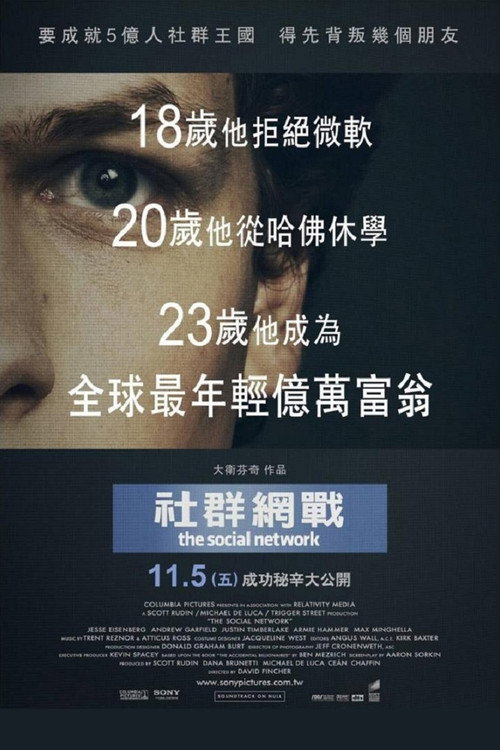
社交网络 The Social Network
「你不是混蛋，你只是太努力想成为混蛋。」
剧情梗概
2003 年秋天，哈佛学生马克·扎克伯格在宿舍里写出了一个网站。几年后这个网站有了五亿用户，而他被两个人告上了法庭：出钱的朋友爱德华多·萨维林，以及声称创意是自己的温克沃斯兄弟。全片用两场听证会交叉讲述，把「一个网站是怎么变成一家公司的」拆成了证词。
亮点
- 第 83 届奥斯卡八项提名、三项获奖：最佳改编剧本（艾伦·索金）、最佳原创配乐、最佳剪辑。
- 大卫·芬奇执导，索金改编自本·麦兹里奇的《意外的亿万富翁》；扎克伯格本人没有参与，也不认可这部片。
- 配乐由九寸钉乐队的特伦特·雷泽诺与阿提喀斯·罗斯创作，冷冽的电子音色几乎定义了 2010 年代的电影声音。
- 杰西·艾森伯格演的马克从头到尾没说过一句「对不起」；而这条线的另一端是安德鲁·加菲尔德演的爱德华多——一个真的把朋友当朋友的人。
- 全片节奏极快，索金的台词像子弹；开场五分钟那场分手戏后来被无数剧本研究。
- 豆瓣 8.6 / 烂番茄 96% / Metacritic 95，是二十一世纪评分最高的美国剧情片之一；当年最佳影片输给了《国王的演讲》。
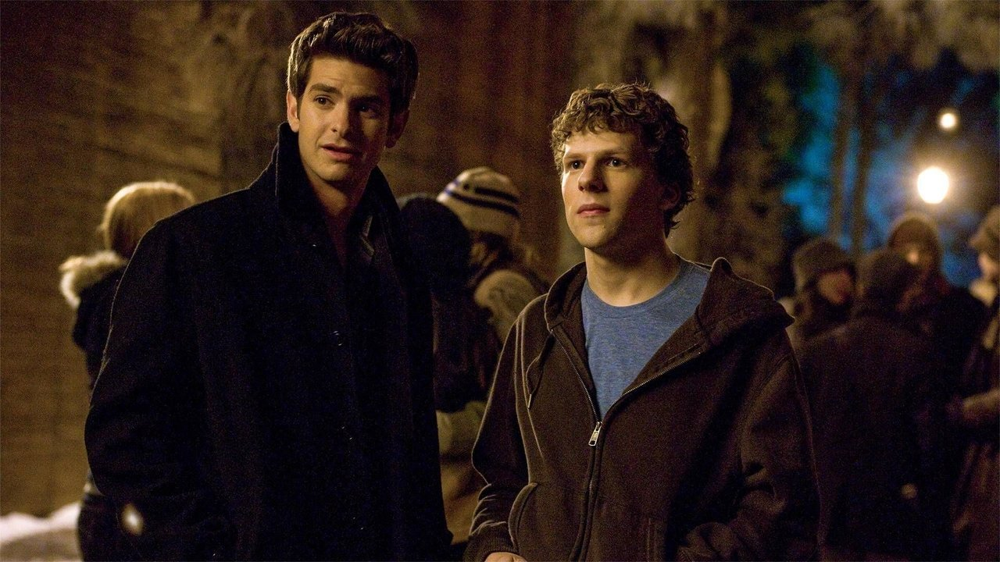
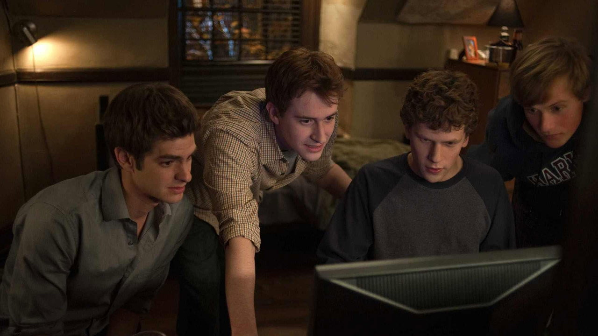
导演与主创 · 他们的历史作品

 搏击俱乐部
搏击俱乐部 七宗罪
七宗罪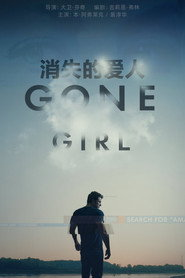
消失的爱人 本杰明·巴顿奇事
本杰明·巴顿奇事 惊天魔盗团
惊天魔盗团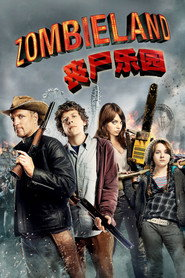
丧尸乐园 惊天魔盗团2
惊天魔盗团2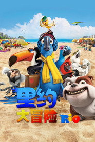
里约大冒险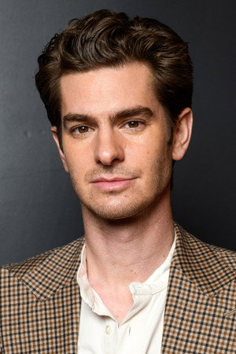
 超凡蜘蛛侠
超凡蜘蛛侠 血战钢锯岭
血战钢锯岭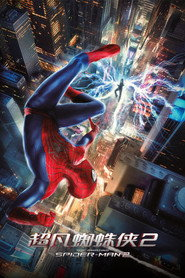
超凡蜘蛛侠2 沉默
沉默短评（轻微剧透）
《社交网络》不是一部关于 Facebook 的电影，是一部关于「被承认」的电影。马克从头到尾想要的不是钱——他想要的是进那个俱乐部、被那群人看见，以及证明自己配得上。轻微剧透：真正的转折不在官司，在最后。他赢了，成了最年轻的亿万富翁，然后一个人坐在会议室里，反复刷新前女友的页面。律师对他说「你不是混蛋，你只是太努力想成为混蛋」——这句话是全片的判决书。芬奇和索金的厉害之处在于他们没有让马克悔改，也没有让他受到惩罚：他只是坐在那里，一遍遍刷新。十年后回头看，这部片几乎预言了接下来的一切：一个人做了一件改变世界的事，动机却小得可怜；而那件小事，最后真的改变了世界。
为什么值得一看
想看二十一世纪最锋利的剧本与剪辑的人；喜欢《点球成金》《史蒂夫·乔布斯》这类索金式对白的观众。含粗口、少量饮酒与派对场面，无暴力血腥。内地未映，流媒体可看。
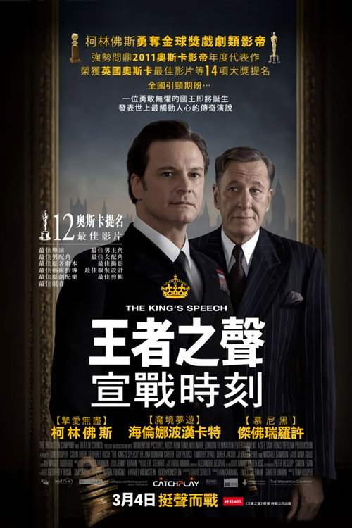
国王的演讲 The King's Speech
「我有权利被听见吗？」
剧情梗概
兄长退位之后，乔治六世意外继承了王位。问题是他口吃严重，而 1939 年他必须对着整个大英帝国发表宣战演说。妻子帮他找到一位没有执照、没有头衔的澳大利亚语言治疗师莱纳尔·罗格。两个人在一间小房间里开始了一场漫长的练习。
亮点
- 第 83 届奥斯卡十二项提名、四项获奖：最佳影片、最佳导演（汤姆·霍伯）、最佳男主角（科林·费尔斯）、最佳原创剧本。
- 科林·费尔斯凭此片拿下奥斯卡影帝；他此前以《傲慢与偏见》《单身男子》闻名，本片是他真正的主演代表作。
- 杰弗里·拉什演的罗格是真实人物，一个靠在朗诵会上表演维生、没有任何医学资格的澳大利亚人。
- 剧本由大卫·塞德勒写；他自己童年严重口吃，多年后才敢把这个故事写出来，完成时才让家人读。
- 成本仅 1400 万美元，全球票房超过 4.2 亿美元，是当年最赚钱的艺术片之一。
- 同年它在奥斯卡上击败了《社交网络》——这场争论（传统匠艺 vs 当代锋利）到今天还在被人提起。
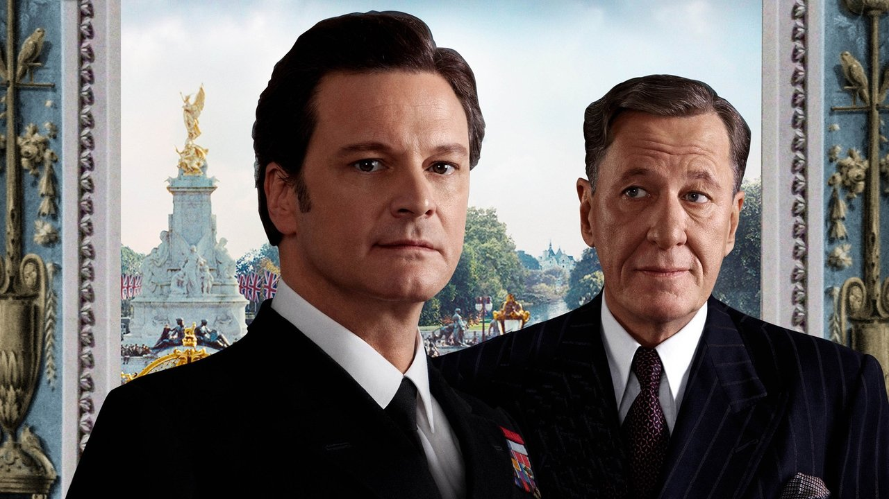
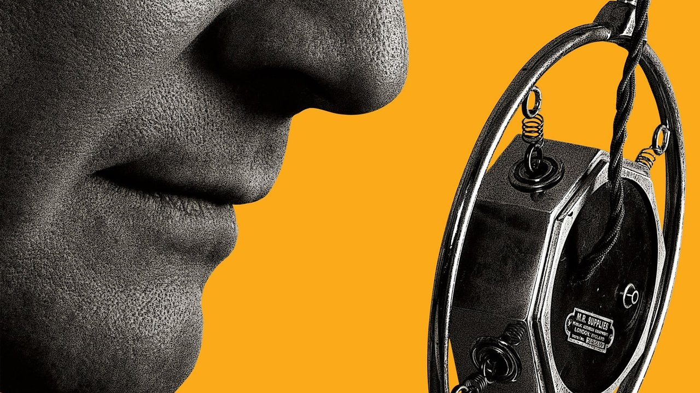
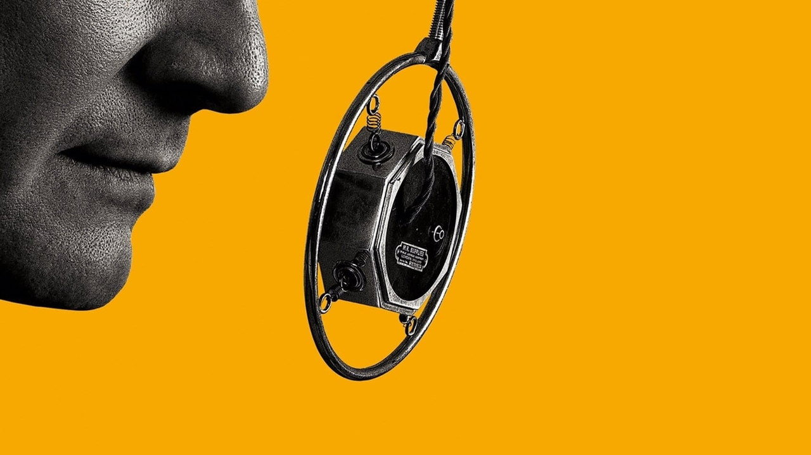
导演与主创 · 他们的历史作品
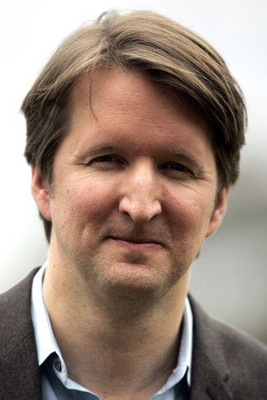
 丹麦女孩
丹麦女孩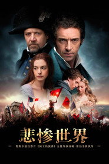
悲惨世界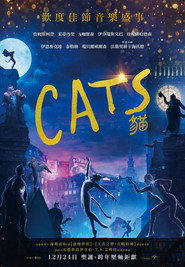
猫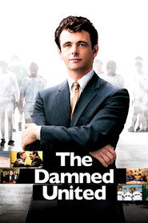
魔鬼联队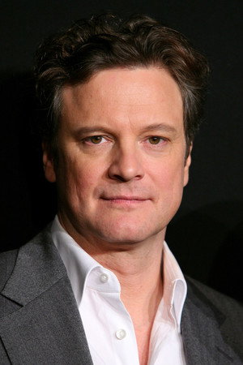
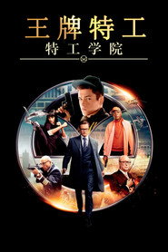
王牌特工：特工学院 王牌特工2：黄金圈
王牌特工2：黄金圈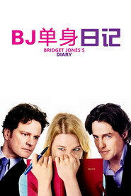
BJ单身日记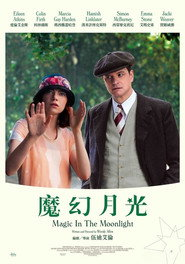
魔力月光
 加勒比海盗1：黑珍珠号的诅咒
加勒比海盗1：黑珍珠号的诅咒 加勒比海盗3：世界的尽头
加勒比海盗3：世界的尽头 加勒比海盗4：惊涛怪浪
加勒比海盗4：惊涛怪浪 偷书贼
偷书贼短评（轻微剧透）
《国王的演讲》讲的是一件很小的事：一个人怎么把话说出来。它没有任何战争场面，也没有政治博弈，全部张力都压在两个男人之间那间小屋子里。轻微剧透：真正的转折在罗格让国王骂人。他发现国王在说脏话时完全不结巴——问题从来不在发音，而在他从小被纠正、被规训、被告知「你不行」。于是治疗变成了政治：一个国王必须先被允许发脾气，才可能对着全国说话。最后的宣战演说拍得极慢，镜头贴着费尔斯的脸，你能听见每一次呼吸。这部片被批评太「安全」，但它的手艺确实无懈可击：它把一个国家的危机收进了一个人的喉咙里，然后让人看着他一个字一个字把它说出来。
为什么值得一看
想看表演撑起整部片的经典范例的人；喜欢《至暗时刻》《敦刻尔克》这类英国历史题材的观众。无暴力与情色内容，节奏舒缓、情绪克制。内地未映，流媒体可看。
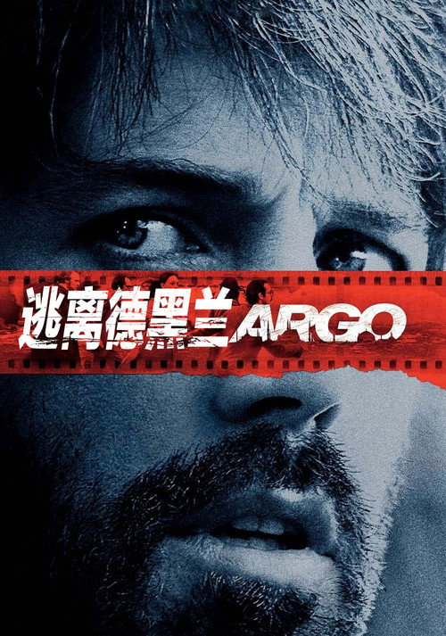
逃离德黑兰 Argo
「你要在好莱坞拍一部烂片？那你就有一千个借口了。」
剧情梗概
1979 年伊朗革命，美国驻德黑兰大使馆被占领，六名外交人员逃脱后藏在加拿大外交官的住所里。中情局的营救方案是：让他们假扮成一个来伊朗勘景的科幻电影剧组，拿着加拿大护照上飞机。为此，他们真的在洛杉矶开了一家公司、买了一个剧本、开了一场发布会。
亮点
- 第 85 届奥斯卡七项提名、三项获奖：最佳影片、最佳改编剧本（克里斯·特里奥）、最佳剪辑。
- 本·阿弗莱克自导自演；他凭此片拿下金球奖与英国电影学院奖最佳导演，却连奥斯卡导演提名都没拿到，是当年最大的争议之一。
- 改编自中情局特工托尼·门德斯的自述，以及 2007 年《连线》杂志的一篇文章；真实行动代号是「加拿大骗局」（Canadian Caper）。
- 那部虚构的电影叫《Argo》，剧本是真的写出来、概念图是真的画出来、发布会是真的办了——片中这些细节几乎没做戏剧化处理。
- 艾伦·阿金演的制片人约翰·钱伯斯与约翰·古德曼演的化妆师钱伯斯的老搭档，两人负责给这部「烂片」提供真实的好莱坞行头。
- 结尾的机场段落被公认为近二十年最有效的悬念片段之一；阿弗莱克在这里几乎只用了剪辑和人脸。
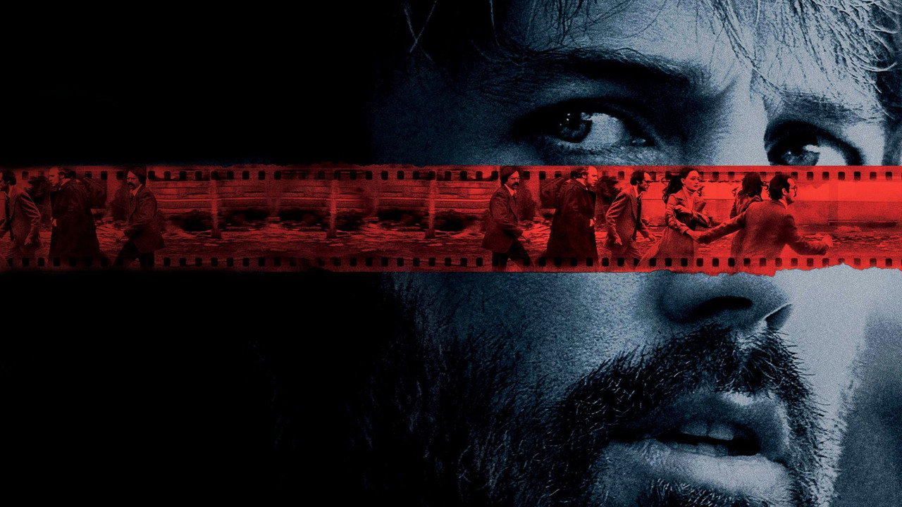
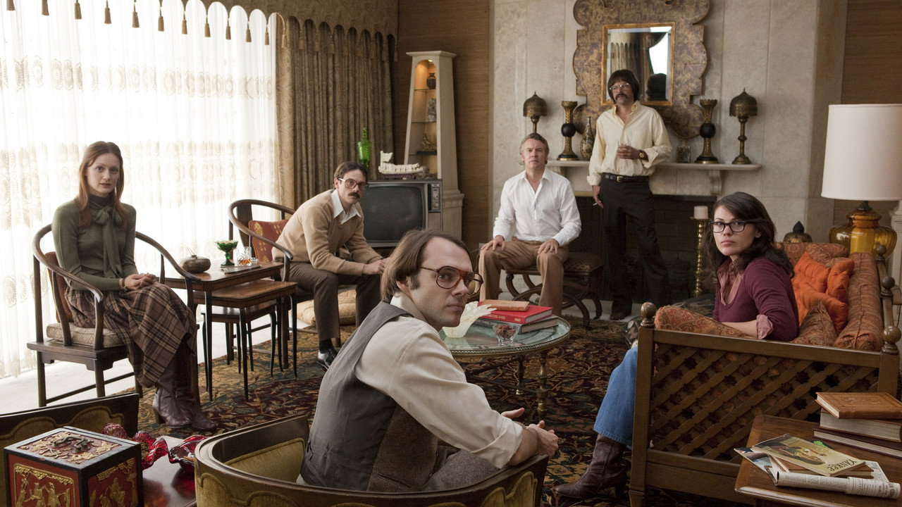
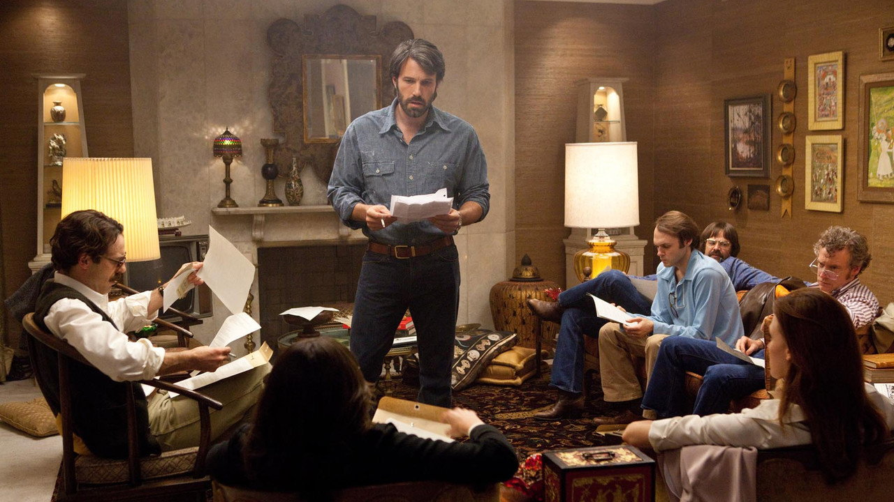
导演与主创 · 他们的历史作品

 蝙蝠侠大战超人：正义黎明
蝙蝠侠大战超人：正义黎明 正义联盟
正义联盟 扎克·施奈德版正义联盟
扎克·施奈德版正义联盟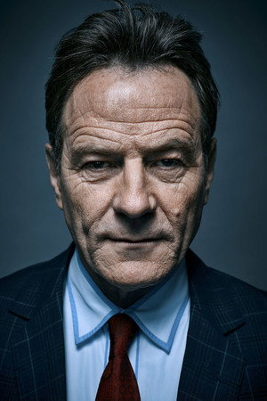
 犬之岛
犬之岛 亡命驾驶
亡命驾驶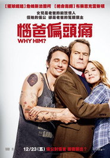
为什么是他？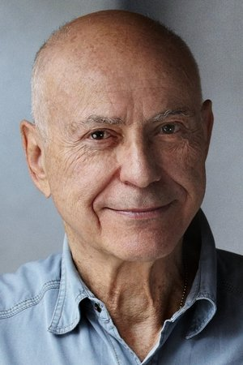
 千钧一发
千钧一发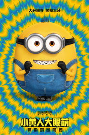
小黄人大眼萌：神偷奶爸前传 阳光小美女
阳光小美女短评（轻微剧透）
《逃离德黑兰》最好看的地方是它把「最荒唐的方案」拍成了唯一可行的方案。一个中情局的人坐在一屋子将军面前说：我要让他们假装拍电影。所有人都觉得他疯了——但正因为疯，才没人会信它是真的。轻微剧透：真正的转折在最后那架飞机上。所有文件、所有伪装都过了，只有机长多问了一句；电话打回好莱坞那个已经关掉的公司，居然有人接了。阿弗莱克在这里做了一件很聪明的事：他把全片最大的赌注压在一个已死项目的电话铃上。这部片常被批评「历史不准确」（尤其是弱化英国与加拿大的作用），但作为类型片它几乎无短板——每一分钟都在解释为什么这个方案能成立，又为什么它随时会塌。它是近二十年最好看的「假装」电影，讲的是一个国家的危机靠一群骗子解决的故事。
为什么值得一看
想看近二十年最紧张的类型片之一的人；喜欢《慕尼黑》《间谍之桥》这类冷战题材的观众。含枪战威胁与时代暴力画面，紧张度高但血腥度低。内地未映，流媒体可看。
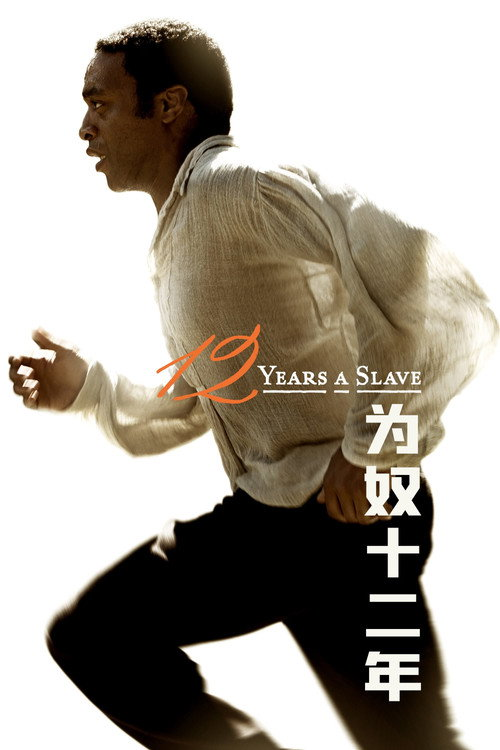
为奴十二年 12 Years a Slave
「我不要只是活下去，我要活得像个人。」
剧情梗概
1841 年，纽约州的自由黑人音乐家所罗门·诺瑟普被两个人以高薪工作骗去华盛顿，醒来时已经被锁在奴隶牢里。此后十二年，他被转卖、改名、从一个种植园换到另一个，唯一能做的是不让任何人知道他识字、会拉小提琴。
亮点
- 第 86 届奥斯卡九项提名、三项获奖：最佳影片、最佳改编剧本（约翰·雷德利）、最佳女配角（露皮塔·尼永奥）。
- 史蒂夫·麦奎因成为首位拿下奥斯卡最佳影片的黑人导演；他与编剧雷德利坚持一件事：不拍成励志片，只拍成事实。
- 改编自所罗门·诺瑟普 1853 年出版的自传《为奴十二年》，这本书在他生前卖出三万册，之后被遗忘了一百多年，直到 1960 年代才被重新发现。
- 切瓦特·埃加福演所罗门；全片最著名的一场戏是他在绞刑架旁被吊了很久——那场戏拍了很久，他真的悬在空中。
- 迈克尔·法斯宾德演的埃普斯是这部片里最复杂的反派：一个一边引用《圣经》、一边把奴隶当作财产的种植园主。
- 烂番茄 95% / Metacritic 96，是 2010 年代评分最高的影片之一；豆瓣 8.3，国内观众对它的「不煽情」评价两极。
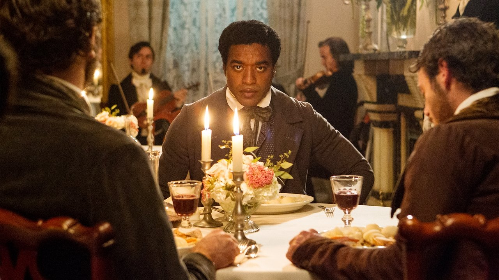
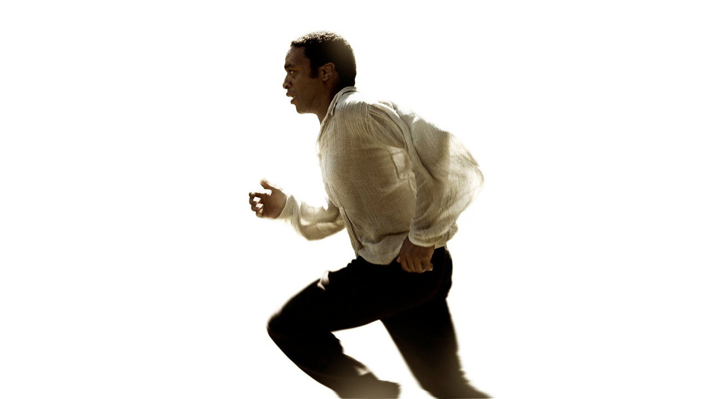
导演与主创 · 他们的历史作品
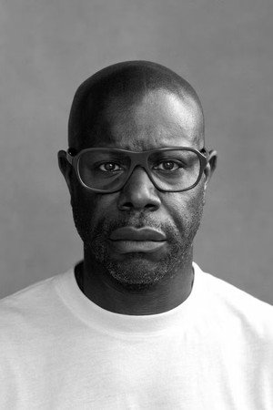
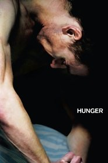
饥饿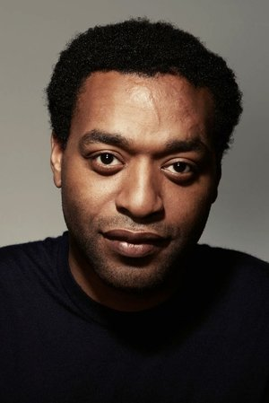
 奇异博士
奇异博士 2012
2012 后室
后室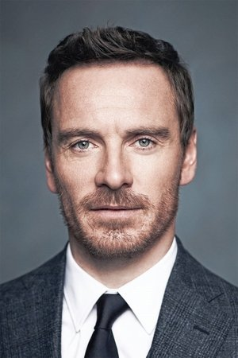
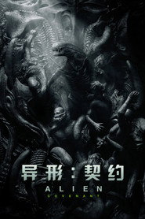
异形：契约 刺客信条
刺客信条 X战警：天启
X战警：天启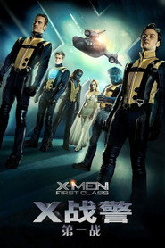
X战警：第一战短评（轻微剧透）
《为奴十二年》最难受的地方不是暴力，是时间。麦奎因不把它拍成一连串事件，而是拍成一整段被偷走的十二年的长度——你会真的感到时间在他身上过去了。轻微剧透：真正的转折是纸。所罗门偷偷写信、求人代寄，一次次失败；最后帮他的是一名加拿大木匠，一个愿意为他冒一点风险的白人。这里麦奎因做了最冷静的处理：救他的不是某个英雄时刻，只是一个普通人决定不看另一边。结尾他回到家中，十二年之后，孩子已经长大、女儿已经结婚，他对家人说的第一句话是道歉。这部片拒绝给你一个「重获自由」的爽感，它只给你一个人站在门口、已经不太知道怎么当父亲的样子。这是近十年关于奴隶制最诚实的一部电影。
为什么值得一看
想看近年最重要的历史题材奥斯卡最佳影片的人；能接受长时间暴力与羞辱场面、情绪极度压抑的观众。含鞭打、吊刑与性暴力暗示，压迫感贯穿全片。内地未映，流媒体可看。
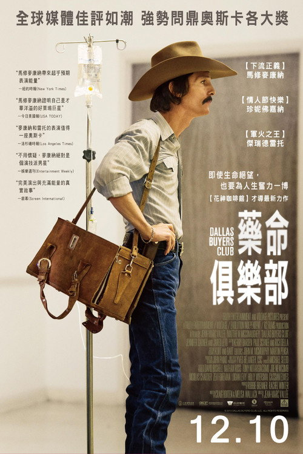
达拉斯买家俱乐部 Dallas Buyers Club
「我不是在等死，我在找活路。」
剧情梗概
1985 年的达拉斯，电工兼牛仔罗恩·伍德鲁夫被查出感染艾滋，医生说他只剩三十天。当时唯一获批的药物 AZT 毒性极强，他开始从墨西哥、日本等地走私未被批准的药物，并成立「达拉斯买家俱乐部」，按月收会费、按月发药。他这么做一开始只是为了活下去，也为了赚钱。
亮点
- 第 86 届奥斯卡六项提名、三项获奖：最佳男主角（马修·麦康纳）、最佳男配角（杰瑞德·莱托）、最佳化妆与发型。
- 马修·麦康纳为这个角色减重约 20 公斤，杰瑞德·莱托减重约 13 公斤并全程以女性形象示人；两人的体重变化是当年最常见的话题。
- 真实人物罗恩·伍德鲁夫 1992 年去世，比医生预言的三十天多活了七年；片中「买家俱乐部」的运作方式基本按史实。
- 导演让-马克·瓦雷采用大量手持与跳切，成本不足 500 万美元，拍摄周期只有 25 天。
- 雷蒙这个角色是虚构的，是罗恩与几名真实病友的复合体——这一点在片尾字幕里写明了。
- 豆瓣 8.7 高于多数海外评分（IMDb 8.0 / 烂番茄 92%），国内观众对「求生」这条线的接受度明显更高。
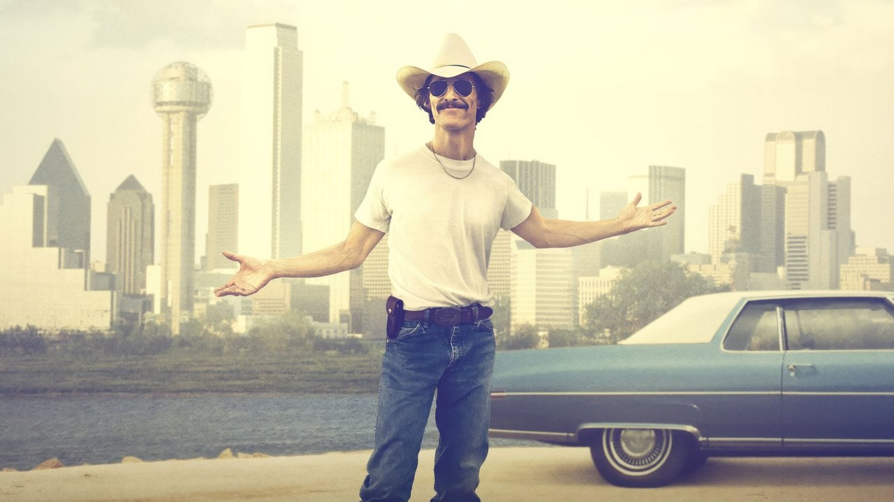
导演与主创 · 他们的历史作品
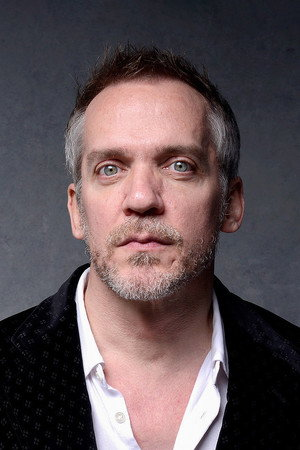
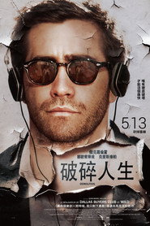
破碎人生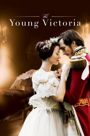
年轻的维多利亚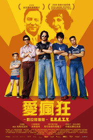
爱疯狂
 星际穿越
星际穿越 欢乐好声音
欢乐好声音 绅士们
绅士们 华尔街之狼
华尔街之狼
 X特遣队搏击俱乐部
X特遣队搏击俱乐部 无姓之人
无姓之人 梦之安魂曲
梦之安魂曲短评（轻微剧透）
《达拉斯买家俱乐部》不是一部关于英雄的电影，是一部关于「自私怎么变成责任」的电影。罗恩一开始什么都不相信：他恐同、他骂人、他卖药就是做生意。他之所以开始跟病人打交道，是因为有利可图；之所以后来不跑了，是因为他发现除了他没人管这些人。轻微剧透：真正的转折在他自己拿到药之后。他本可以拿着钱走掉，但他留下来跟 FDA 打官司、跟医院吵、跟药厂硬碰硬——不是为了平反，只是因为他在那儿多待一天，就多几个人能活到明天。麦康纳演得最好的地方是他从没让罗恩「变好」：到死他还是那个粗口连篇的德州佬。结尾他在墨西哥找到药、在法庭上被驳回，字幕说 FDA 两年后批准了相关药物的个人进口。这不是胜利，是迟到了七年的一句「你本可以活」。
为什么值得一看
想看近年最被认可的表演驱动型传记片的人；喜欢《永不妥协》《聚焦》这类「一个人对抗系统」的观众。含粗口、毒品使用、疾病与身体衰败画面，情绪沉重但克制。内地未映，流媒体可看。
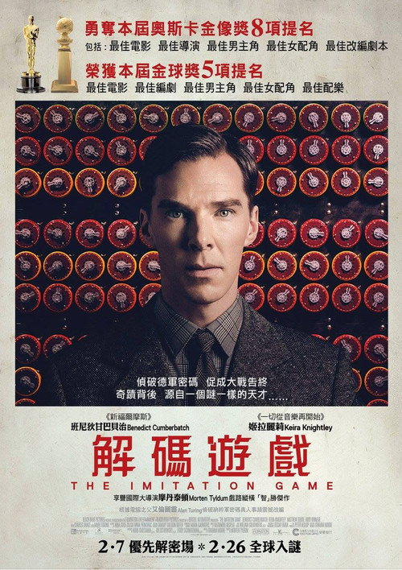
模仿游戏 The Imitation Game
「有时候，正是那些不被看好的人，成就了无人能及的事。」
剧情梗概
二战期间，数学家艾伦·图灵加入英国布莱切利园的密码破译小组，带着一支团队造出了一台能破解德军「恩尼格玛」的机器。1952 年，他因同性恋身份被警方以「严重猥亵」定罪，被迫接受化学阉割，两年后去世。影片在这三条时间线之间来回切换。
亮点
- 第 87 届奥斯卡八项提名、一项获奖：最佳改编剧本（格拉汉姆·摩尔）。
- 本尼迪克特·康伯巴奇演图灵；他为了这个角色练了特定的口音与动作习惯，也推掉了多部商业片邀约。
- 凯拉·奈特莉演琼·克拉克——真实人物，当时布莱切利园为数不多的女性破译者之一，图灵曾向她求婚。
- 改编自安德鲁·霍奇斯的传记《艾伦·图灵：谜》；片中「机器叫 Christopher」这一设定来自图灵少年时恋人的名字，属实。
- 图灵 1952 年被定罪，1954 年去世；英国直到 2009 年才正式道歉，2013 年才追授赦免——这句字幕是本片最重的一击。
- 口碑分裂得很清楚：豆瓣 8.6 / 烂番茄 89%，观众向一边倒；Metacritic 只有 73，影评界批评它「太工整、太讨好」。
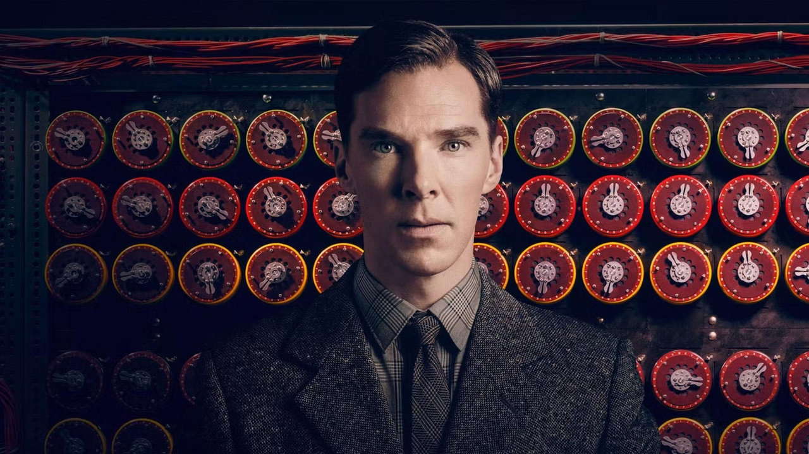
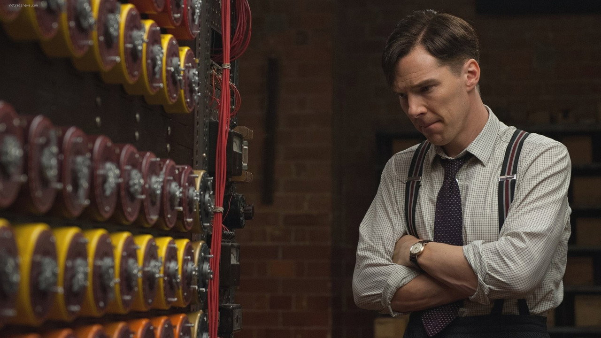
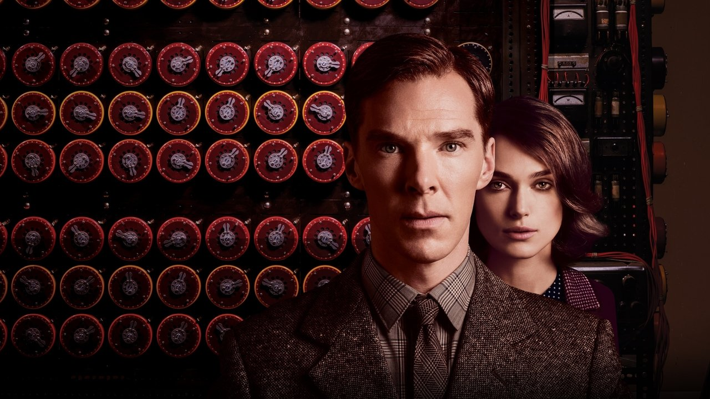
导演与主创 · 他们的历史作品
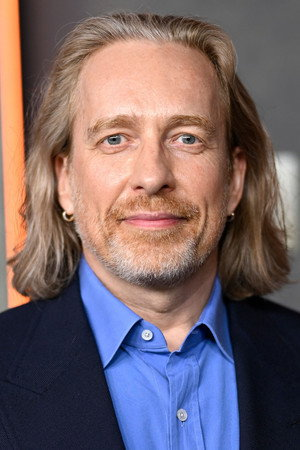
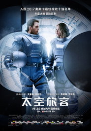
太空旅客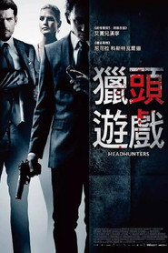
猎头游戏奇异博士 蜘蛛侠：英雄无归
蜘蛛侠：英雄无归 傲慢与偏见
傲慢与偏见 加勒比海盗2：聚魂棺加勒比海盗1：黑珍珠号的诅咒加勒比海盗3：世界的尽头
加勒比海盗2：聚魂棺加勒比海盗1：黑珍珠号的诅咒加勒比海盗3：世界的尽头短评（轻微剧透）
《模仿游戏》最成功的地方是它把一台机器和一个人的命运接在了一起。图灵那台机器叫 Christopher——少年时他爱过的那个男孩的名字。他一辈子都在做同一件事：造一个能替人完成「不可能」的东西，而社会给他的回报是让他不再是一个合法的人。轻微剧透：真正的转折在战后。他没有被表彰，没有被记住，只有一纸罪名和一支让他身体变形的针剂。康伯巴奇在这里演的不是天才的潇洒，是一个人怎么在两年之内被一点点拆掉。结尾那句字幕说「据估计，图灵的工作缩短了战争约两年，拯救了约一千四百万条生命」，然后是 2013 年的赦免。这部片被批评太工整，但它把一个迟到六十年的道歉拍成了一部你看得下去的电影——这件事本身有它的价值。
为什么值得一看
想看近年最被大众接受的图灵故事的人；喜欢《美丽心灵》《万物理论》这类科学家传记的观众。含毒品（自杀）与疾病情节、时代歧视议题，情绪沉重但处理温和。内地未映，流媒体可看。
大空头 The Big Short
「真相就像诗歌，可大多数人讨厌诗歌。」
剧情梗概
2005 年起，几个局外人先后发现了同一件事：美国的住房抵押贷款被打包成债券，层层卖给了全世界，而这些贷款的违约率正在飙升。他们开始做空——也就是押注整个市场崩盘。问题是，在崩盘之前，他们必须先付很多年的利息。
亮点
- 第 88 届奥斯卡五项提名、一项获奖：最佳改编剧本（亚当·麦凯与查尔斯·兰道夫）。
- 亚当·麦凯此前是喜剧导演（《王牌播音员》《二流警探》），本片是他第一次用喜剧手法拍正剧——他自己说这是他「最愤怒的一部」。
- 改编自迈克尔·刘易斯的同名纪实作品；片中四位主角都有真实原型（迈克尔·巴里、史蒂夫·艾斯曼、杰瑞德·韦内特、康沃尔资本）。
- 片中几次直接打断叙事，让名人（厨师、演员、经济学家）用大白话解释 CDO、合成 CDO 与信用违约互换——这个设计后来被大量模仿。
- 克里斯蒂安·贝尔演的迈克尔·巴里是真实人物：一位患有亚斯伯格、一只眼睛失明的对冲基金经理，他靠一页页读贷款合同发现了问题。
- 豆瓣 8.5 / 烂番茄 89%，是金融危机题材里评价最高的一部；IMDb 7.8 稍低，主要因为大量术语让人疲劳。
导演与主创 · 他们的历史作品
 蝙蝠侠：黑暗骑士
蝙蝠侠：黑暗骑士 蝙蝠侠：黑暗骑士崛起
蝙蝠侠：黑暗骑士崛起 蝙蝠侠：侠影之谜
蝙蝠侠：侠影之谜 美国精神病人
美国精神病人短评（轻微剧透）
《大空头》最厉害的地方是它把一件极其专业的事拍出了愤怒。金融本来是最难拍的题材——没有动作、没有现场，只有表格和术语；麦凯的解法是让角色对着观众说话，让名人在厨房里用叠叠乐解释债务分层。轻微剧透：真正的转折不是崩盘，是崩盘之后。马克·鲍姆在雷曼倒闭的第二天站在楼下，看着街上的人照常上班，说「他们不知道，也没人去告诉他们」。全片最重的一句台词在结尾：那些银行被罚了款、换了名字，然后又重新开始卖同样的东西。这部片没有英雄，它的人物有的赚了钱、有的关了基金、有的再也不碰金融。它唯一坚持的是：这件事是可以被看懂的，而看懂它的人，当时没人愿意听。
为什么值得一看
想看金融危机被讲明白的人；喜欢《商海通牒》《华尔街之狼》这类金融题材的观众。含粗口与行业术语，节奏快但需要专注。内地未映，流媒体可看。
隐藏人物 Hidden Figures
「她们是这里的计算员，只不过她们是黑人女性。」
剧情梗概
1961 年的弗吉尼亚，NASA 兰利研究中心西区的计算组里，三位非裔女性在做着最关键的运算：凯瑟琳·约翰逊负责轨道验算，多萝西·沃恩自学了 Fortran 并带团队转向新机器，玛丽·杰克逊想成为工程师却必须先去上「白人学校」。水星计划要在苏联之前把人送上轨道。
亮点
- 第 89 届奥斯卡三项提名：最佳影片、最佳改编剧本、最佳女配角（奥克塔维亚·斯宾塞）。
- 改编自玛戈特·李·谢特利的纪实作品《隐藏人物》；三位主角都是真实人物，凯瑟琳·约翰逊 2015 年获总统自由勋章。
- 凯瑟琳·约翰逊的验算被约翰·格伦亲自要求复核——他不信计算机，他说「如果她说是这个数，我就上」；这句台词是真的。
- 塔拉吉·P·汉森演凯瑟琳；全片最著名的两场戏分别是她在法庭上要求使用「有色人种」厕所的辩白，以及她抱着一摞资料跑半英里去另一个楼的洗手间。
- 多萝西·沃恩那条线是全片最「职场」的一条：她看懂了 IBM 主机迟早会取代计算员，于是偷学编程，把整个组带进了新部门。
- 豆瓣 8.6 / 烂番茄 93% 明显高于 Metacritic 74——影评界批评它「太励志、太工整」，普通观众却买账得非常彻底。
导演与主创 · 他们的历史作品
本杰明·巴顿奇事 水形物语
水形物语 相助
相助短评（轻微剧透）
《隐藏人物》不拍惊天动地的反抗，它拍的是「被允许」。凯瑟琳每一天的障碍都不是张大网，而是一件小事：最近的咖啡壶、最近的厕所、能不能进会议室、能不能在报告上署名。轻微剧透：真正的转折是那块黑板。凯瑟琳被允许进入任务控制室的那天，所有人看着她在黑板上写出轨道方程——那一刻她不是被宽容了，是被需要了。全片最打动人的地方在于它没有把任何一个人写成恶棍：拒绝她的同事后来给她倒了咖啡，让她跑半英里上厕所的主管最后说「这里没有规定你不能来」。它没有回避种族隔离，却也没把故事停在那里。三个人一起把一个人送上了天，其中一个人的名字，直到半个世纪之后才被写进教科书。
为什么值得一看
想看近年最被大众喜爱的 NASA 题材片的人；喜欢《绿皮书》《相助》这类温和历史题材的观众。含种族歧视的言语与时代隔离场景，无暴力血腥。内地未映，流媒体可看。
波西米亚狂想曲 Bohemian Rhapsody
「我不需要被拯救，我需要被听见。」
剧情梗概
从希思罗机场的搬运工到摇滚史上最著名的一次现场，影片讲述皇后乐队主唱弗雷迪·莫库里的一生：组乐队、写歌、走红、迷失、确诊，以及最后那场二十分钟的拯救生命演唱会（Live Aid）。
亮点
- 第 91 届奥斯卡五项提名、四项获奖：最佳男主角（拉米·马雷克）、最佳剪辑、最佳音效剪辑、最佳音响效果。
- 拉米·马雷克凭此片拿下奥斯卡影帝；他本人不会唱歌，片中歌声是马雷克的原声与马克·马特尔（皇后乐队 tribute 歌手）的混音。
- 导演署名是布莱恩·辛格，但他在拍摄后期被解雇，剩余部分与后期由德克斯特·弗莱彻完成（后者未获署名）。
- 片尾 21 分钟的 Live Aid 段落几乎一比一复刻了 1985 年那场演出：舞台尺寸、曲目顺序、甚至第一句喊话都按录像还原。
- 全球票房约 9.1 亿美元，是影史最卖座的音乐传记片；内地 2019 年 3 月 22 日通过全国艺术电影放映联盟专线公映。
- 口碑分裂得极其典型：豆瓣 8.7 / IMDb 7.9 / 烂番茄爆米花指数 87%，观众一边倒好评；而影评界只有 烂番茄 60% / Metacritic 49，批评它「流水账、回避性向议题、把人生拍成了名场面集锦」。
导演与主创 · 他们的历史作品
 X战警：逆转未来X战警：天启
X战警：逆转未来X战警：天启 X战警
X战警 非常嫌疑犯
非常嫌疑犯 奥本海默
奥本海默 地下6号X战警：天启
地下6号X战警：天启短评（轻微剧透）
《波西米亚狂想曲》最好的部分和它最被批评的部分是同一件事：它几乎只拍高光。弗雷迪的一生被切成了几个名场面——组乐队、写《波西米亚狂想曲》、和乐队闹翻、确诊、以及最后那场二十分钟。轻微剧透：全片最有分量的一场戏恰恰是最安静的一场：他告诉队友自己得了艾滋，四个人站在录音棚里，谁也没说话。马雷克在这里演的不是模仿，是一个终于把话说出口的人。最后 Live Aid 那二十分钟是全片真正的目的：它拍的不是演唱会，是一个知道自己时日无多的人，最后一次站在几万人面前。影评人说它太工整、太安全，说得没错；但当镜头推到他那句「Day-oh」的时候，你会发现工整本身也是一种力量。这是本期唯一一部「影评人打低分、观众打高分」到这种程度的片，两边都值得看。
为什么值得一看
想看近年最卖座的音乐传记片的人；喜欢《火箭人》《一个明星的诞生》这类舞台题材的观众。含疾病、药物与性向议题，处理方式温和；现场段落极易上头。内地 2019 年公映过，流媒体可看。
芝加哥七君子审判 The Trial of the Chicago 7
「你要是想让我安静，就让我说话。」
剧情梗概
1968 年芝加哥民主党全国代表大会期间，反越战抗议演变成警民冲突。一年后，新上任的尼克松政府以「阴谋煽动暴乱」起诉八名活动人士。审判持续了五个月，法官的偏袒、检方的构陷、以及被告之间的分歧，把这场官司本身变成了抗议的延续。
亮点
- 第 93 届奥斯卡六项提名，包括最佳影片与最佳原创剧本（亚伦·索金）。
- 亚伦·索金自编自导；这个故事他写了十五年，原本计划由斯皮尔伯格执导、索金只写剧本。
- 真实事件：1969 年的「芝加哥七君子案」，八名被告中的黑豹党领袖鲍比·西尔被强行分开审判，甚至在庭上被捆绑和封口——这一段在片中被完整拍了出来。
- 原本由派拉蒙发行，因疫情改为 Netflix 上线；这让它成为当年争议最大的「流媒体抢走院线」案例之一。
- 埃迪·雷德梅恩演汤姆·海登，萨莎·拜伦·科恩演艾比·霍夫曼；两人的风格冲突（一个要体面、一个要闹）是全片最好看的部分。
- 结尾那场「念出越战阵亡士兵名单」的戏是影像虚构的（真实审判中没有），但它几乎是全片被讨论最多的一分钟。
导演与主创 · 他们的历史作品
 社交网络
社交网络 好人寥寥丹麦女孩
好人寥寥丹麦女孩短评（轻微剧透）
《芝加哥七君子审判》是一部关于「程序」的电影。索金最擅长的事就在这里：他让一群人为了一个词、一句允许、一次发言权，来来回回地争，而你居然看得血脉贲张。轻微剧透：真正的转折在鲍比·西尔。他被强行捆绑、塞住嘴、拖出法庭——那一刻你才明白这场审判的重点从来不是定罪，而是让人闭嘴。后面所有人的选择都从这条线生出来：艾比用嘲讽对抗，汤姆用体面争取，而到最后两个人都在同一件事上让步。影片结尾给了每个人一句去向字幕，那些数字比任何台词都狠：有人继续从政，有人流亡，有人在几年后死于服药过量。索金很清楚自己在拍什么——一场五个月的审判，最后被历史判了无罪，而做出这个决定的人，名字一个也没留下。
为什么值得一看
想看近年最好的法庭题材片的人；喜欢《十二怒汉》《好人寥寥》《社交网络》这类索金式对白的观众。含警民暴力冲突与庭审羞辱画面，无血腥但情绪激烈。内地未映，流媒体可看。